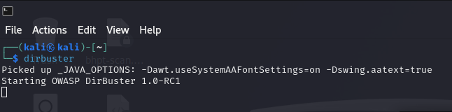
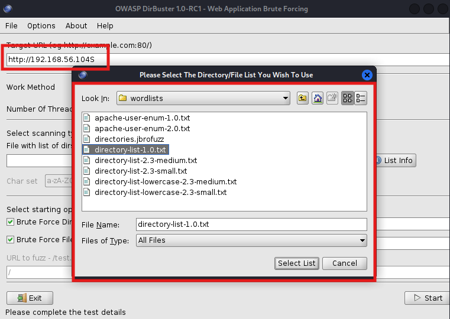
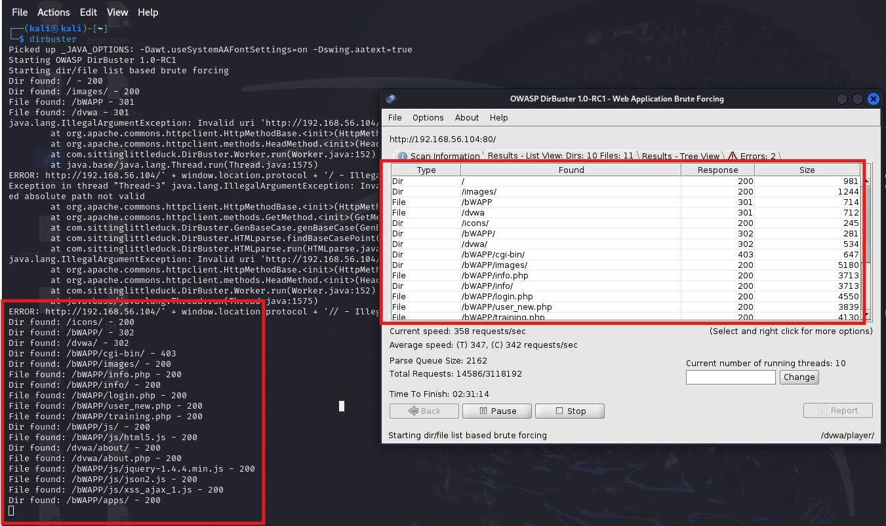

DirBuster
- URL 목록 파일을 사용해 각 URL을 자동으로 입력해 보는 방식으로 웹 애플리케이션 구조를 파악함
숨겨진 페이지를 찾을 수 있다.
- 목록 파일을 사용해 정보를 찾는 기법을 브루트 포스 공격이라 칭함 주로 사용자의 패스워드를 찾는 기법임
DirBuster로 실습

명령어로 dirbuster기능을 실행하고
/usr/share/disbuster/wordlists 경로를 선택해 directory-list-1.0.txt 파일을 선택

Start 버튼을 누르게 되면

웹 애플리케이션 매핑으로 활용되며 찾은 URL정보를 직접 접속해 보면서 수동 매핑과 크롤링을 추가로 연계해 나갈 수 있다.
TIP
- 웹 애플리케이션을 매핑을 위해 DirBuster, 수동 매핑, 스파이더 기능을 같이 활용할 수 있다.